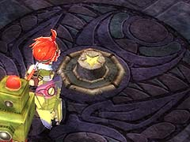
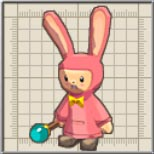
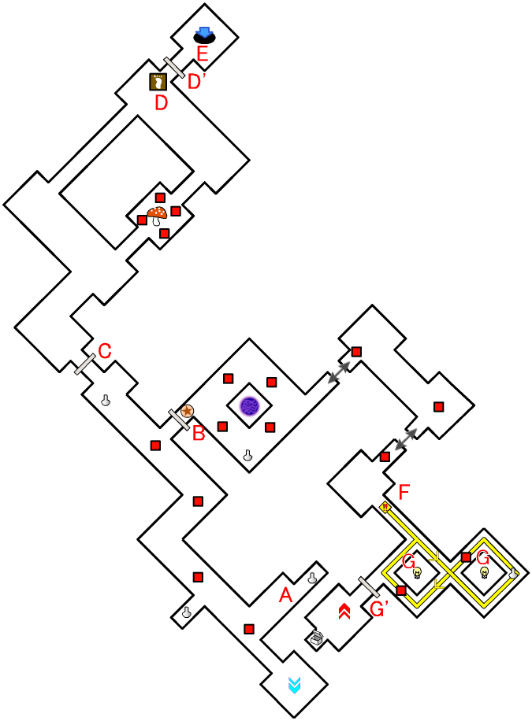
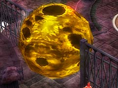
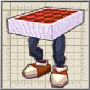

扉越しに「アンカーギア」で攻撃すれば、スイッチを押したことになります。

(アンチトラップ)
オデッサのブーメランやアルウェンの魔法を当てることで、点灯します。
目次 > ゲームについて > 日本Falcom 攻略 > ZWEI II > ダンジョン一覧 > 月の回廊 (LV.20)
らんの眼
ZWEI II (ツヴァイ 2、ZWEI II Plus)
| 概要 | 情報 | 攻略チャート |
| フード交換 | ペットについて | ボス戦 |
| 敵キャラ一覧 | ハンターランク | G-コロッセオ |
| アイテム一覧 | ガジェット一覧 | トレジャー一覧 |
| ダンジョン一覧 | クリアデータ特典 | Plusの追加要素 |
| ZWEI II攻略へ | 目次へ戻る |
| 第1 階層 |
| ルナ＝ムンドゥスのステージには、A 地点にあるような紫色の球体がたくさんあります。 この球体に近づくと、主人公が空中に浮いてしまいます。また、数回攻撃すると壊すことができますが、壊してしまい行けなくなる場所もあるので注意が必要です。 |
|
|  | B 地点のスイッチを押すことで、B' 地点の扉が開きます。 |
| C 地点のスイッチを押すことで、C' 地点の扉が開きます。 | |
| D 地点のスイッチを押すことで、D' 地点の扉が開きます。 | |
| E 地点にある紫色の球体を壊してしまうと、E 地点からE' 地点へ行くことができなくなります。 | |
| F 地点のスイッチを押すことで、F' 地点の扉が開きます。 | |
|  | G 地点の「わーらびっと」は、主人公の後を着いてきます。しかし、あまり接近しすぎるとワープして距離を取ってしまうので、適度な間隔を保つようにしてください。 また、ここにいる「わーらびっと」を連れていくことで開く扉もあります。 |
| G' 地点の穴に「わーらびっと」を落とすことで、下の階層へ連れていくことができます。 |
| 第2 階層 |

| 第1 階層の穴(G' 地点)に落ちるとA 地点からのスタートになります。 | |
| B 地点のスイッチを押すことで、B 地点の扉が開きます。 扉越しに「アンカーギア」で攻撃すれば、スイッチを押したことになります。 |
|
| C 地点の扉は「わーらびっと」が近づくことで開きます。 | |
| 「体重計」を表示し、体重をラグナならば100 kg 以上、オデッサならば96.6 kg 以上、そしてアルウェンならば82.6 kg 以上にした状態で乗ると、D 地点の足プレートがへこみ、D' 地点の扉が開きます。 | |
| E 地点の穴に「わーらびっと」を落とすことで、下の階層へ連れていくことができます。 | |
|  | F 地点の巨大な玉を攻撃すると、マップ上を転がり始めます。触れるとダメージを受けるので、心配ならば「アンチトラップ」を装備してください。 (アンチトラップ) |
| G 地点の電球を点灯させると、G' 地点の扉が開きます。 オデッサのブーメランやアルウェンの魔法を当てることで、点灯します。 |
| 第3 階層 |
| 第2 階層の穴(E 地点)に落ちると、A 地点からのスタートになります。 | |
| B 地点のゴングを鳴らすと、部屋に複数の敵が出現します。出現した敵を全て倒すと、B' 地点の扉が開きます。 | |
| C 地点の扉は「わーらびっと」が近づかないと開きません。 また、この扉の奥に「わーらびっと」が目指すお茶会の部屋があります。この部屋に着いた状態の「わーらびっと」(「着いた～」と言いいます)を倒すと、宝箱が出現します。 |
|
|  | D 地点へ移動すると、複数の敵が出現します。 |
| E 地点のレバーを動かすと、E' 地点の扉が開きます。 |
| 概要 | 情報 | 攻略チャート |
| フード交換 | ペットについて | ボス戦 |
| 敵キャラ一覧 | ハンターランク | G-コロッセオ |
| アイテム一覧 | ガジェット一覧 | トレジャー一覧 |
| ダンジョン一覧 | クリアデータ特典 | Plusの追加要素 |
| ページの上部へ | ZWEI II 攻略へ | 目次へ戻る |